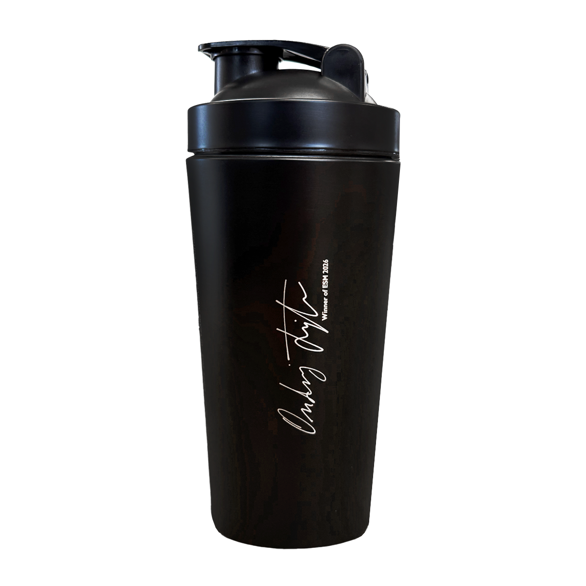
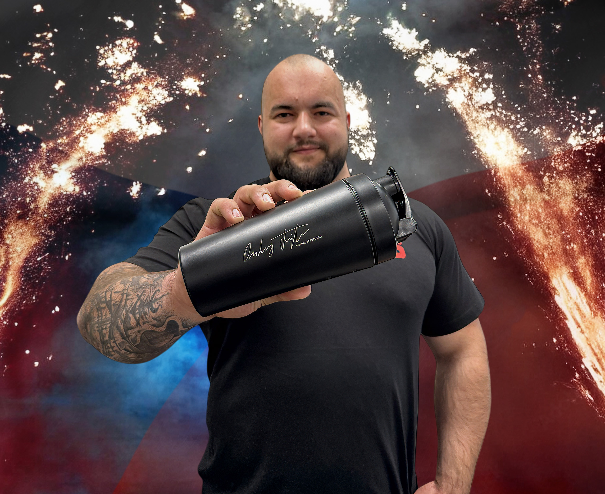
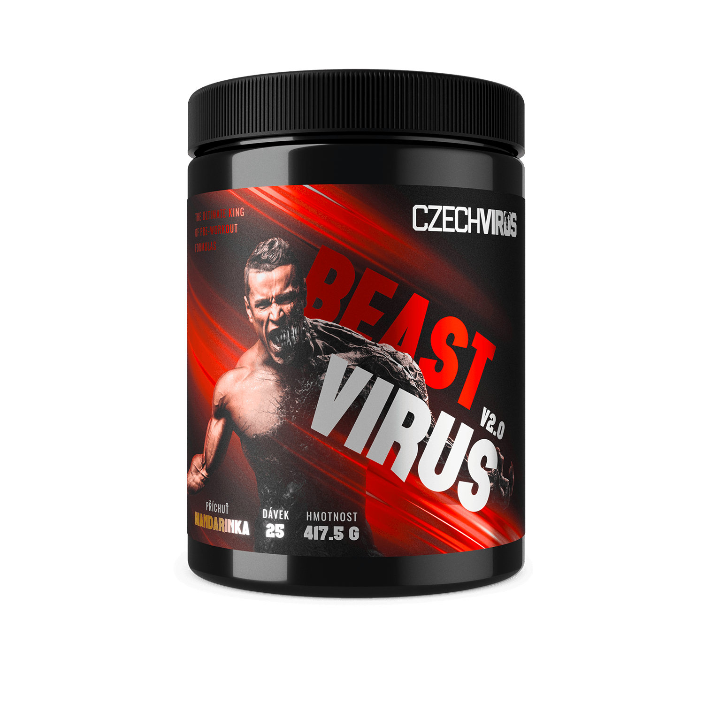
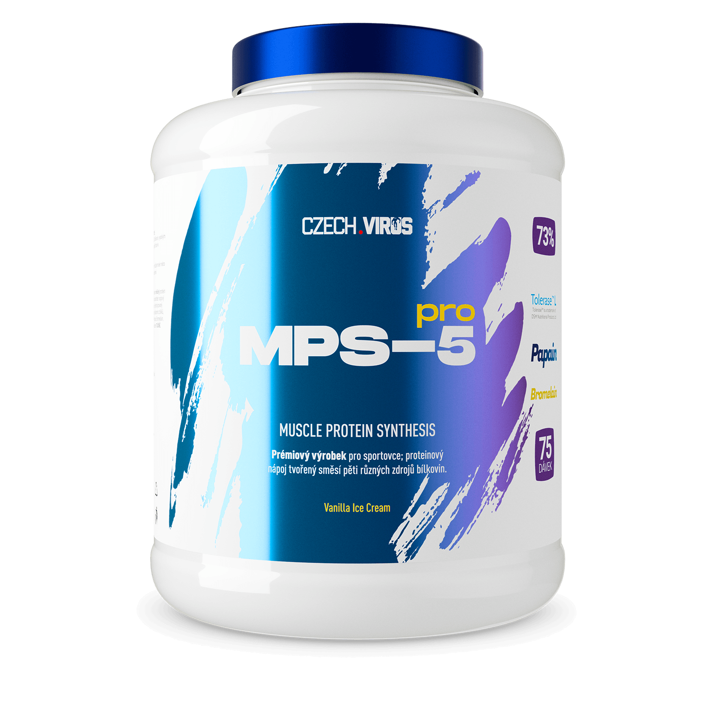
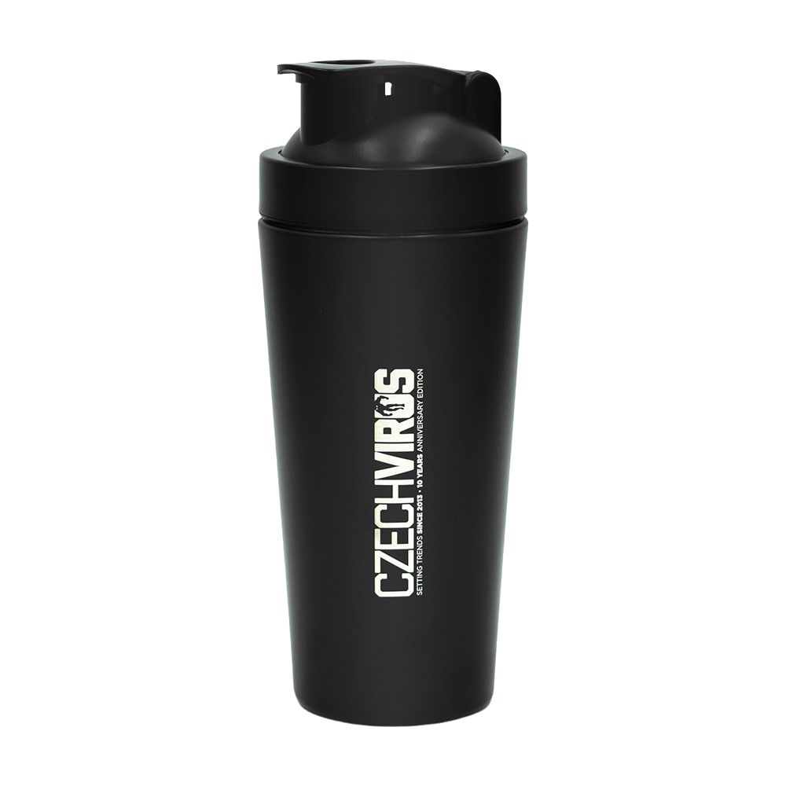

Podpis šampiona Europe's Strongest Man 2026
Steel Shaker Ondřej Fojtů
Nerezový shaker s originálním podpisem Ondřeje Fojtů – čerstvého vítěze Europe's Strongest Man 2026. Čerstvý vítězný podpis přenesený přímo z ruky šampiona a gravírovaný do nerezové oceli.
Historicky první Čech, který v open kategorii ovládl nejprestižnější strongmanskou soutěž v Evropě. Tento shaker je poctou jeho neskutečnému výkonu v Leedsu.


Leeds, 11. dubna 2026
Čech na trůnu Evropy
Ondřej Fojtů, náš ambassador, v sobotu 11. dubna 2026 suverénně ovládl Europe's Strongest Man v Leeds a zapsal se do historie jako první Čech, který titul v open kategorii získal.
24letý Ondra deklasoval konkurenci s náskokem 7 bodů před druhým Pavlem Kordiyakou z Ukrajiny a 12 bodů před třetím Adamem Bishopem z Anglie.
Čerstvě po jeho triumfu jsme od Ondry získali originální podpis, přenesli ho na plátno a nyní jej gravírujeme na náš nerezový shaker. Každý kus nese autentický podpis nejsilnějšího muže Evropy.
Dominance v číslech
5 disciplín. Absolutní nadvláda.
Ondra nevyhrál náhodou. Suverénně dominoval 4 z 5 disciplín, překonal světový rekord a vyrovnal další. Takhle vypadá dominance nejsilnějšího muže Evropy.
51,75 m s kameny o váze 113 kg a 136 kg. Absolutní vítězství a nový světový rekord.
Světový rekord9 opakování se 150kg kládou. Vyrovnání světového rekordu v počtu opakování. Čistá síla a výbušnost.
Vyrovnaný světový rekord8 opakování se 350kg axle deadliftem. Sdílené první místo v jedné z nejbrutálnějších disciplín.
6 položek za 25,84 s – farmer's walk se 150 kg v každé ruce a následný výstup se 250kg schody. Vítězství.
5 kamenů za 21,48 s – jediná disciplína, kde neskončil první, a přesto si udržel obrovský bodový náskok.

Prémiová kvalita
Proč právě Steel Shaker?
Unikátní Czech Virus® shaker z nerezové oceli s vypáleným logem CZECHVIRUS na jedné straně a gravírovaným podpisem Ondřeje Fojtů na straně druhé.
- Nerezová ocel – odolná konstrukce, nezanechává pachy po rozšejkovaných produktech
- Objem 750 ml – ideální velikost pro přípravu koktejlu
- Pevná mřížka – v horní části pro kvalitní promíchání dobře rozpustných produktů
- Mixovací kulička – poradí si i s hůře rozpustnými suplementy
- BPA free – bez BPA a toxinů, zdraví na prvním místě

Europe's Strongest Man 2026
Ondřej Fojtů v akci


Co šejkruje šampion?
Ondrovy oblíbené produkty
Tohle jsou produkty, které Ondřej Fojtů používá při přípravě na soutěže. Přidej si je rovnou do košíku.

Beast Virus V2.0 Mandarinka BCAA Hydramax
Fantastic Orange
BCAA Hydramax
Fantastic Orange

MPS-5 PRO VanilkaJak správně používat
Instrukce k použití
- Nejprve přidej vodu a až následně prášek – vyhneš se hrudkám a lepení
- Uzavři shaker a mixuj alespoň 30 sekund
- Před prvním použitím umyj horkou vodou a mycím prostředkem
- Pro čištění umyj horkou vodou a mycím prostředkem
Nepoužívej s perlivou vodou. Shaker není určen do mrazáku ani do myčky na nádobí.

Limitovaná edice
Podpis vítěze. Na tvém shakeru.
Ondřej Fojtů přepsal historii českého strongmanu. Tento shaker je poctou jeho výkonu – a připomínkou, že limity existují jen v hlavě.